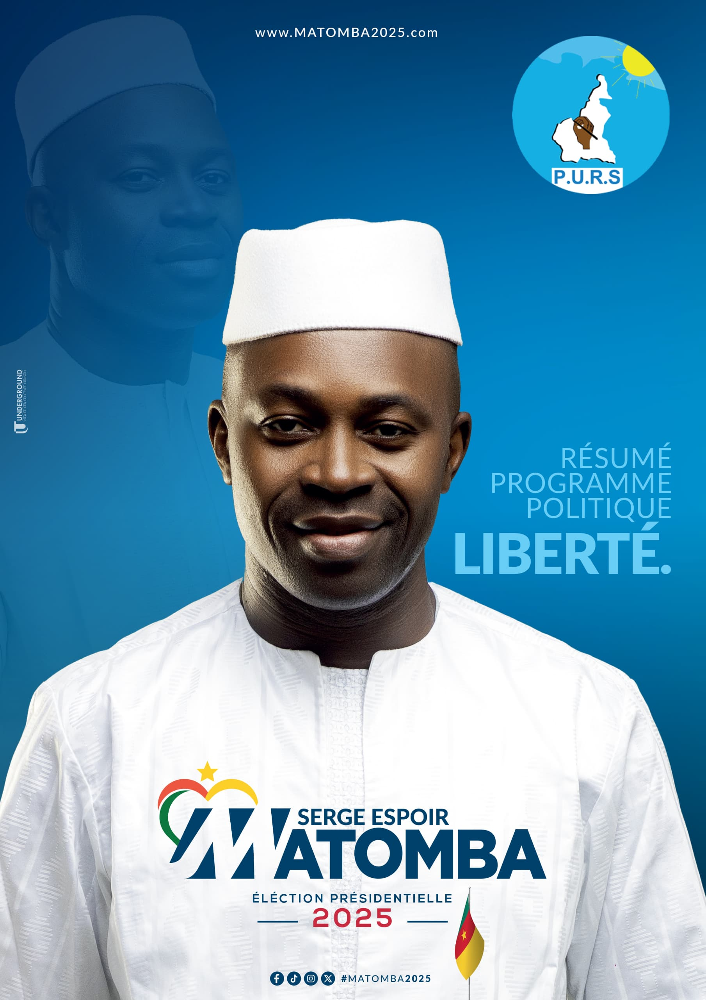

<div class="program-modal">
    <div class="content my-container">
        <div class="texts">
            <h1>LA RUPTURE</h1>
            <p>
                Serge Espoir MATOMBA propose un projet de société fondé sur la souveraineté nationale, la justice sociale, la refondation de l’État ainsi que l’affirmation de l’identité et la diversité camerounaise. Il souhaite bâtir un Cameroun autonome, équitable, culturellement riche, inclusif et durable, affranchi des tutelles néocoloniales. L'objectif est claire : un toi sur votre tête, trois repas par jour dans votre assiette, l'éducation et la santé vos droits. Le projet s'inscrit dans une volonté de décolonisation totale du continent, appuyée sur une renaissance culturelle, économique, portée par des insititutions responsables.
            </p>
            <h2>{{program.title}}</h2>
            <p> {{program?.description}} </p>

            <ul>
                @for (list of program?.list; track $index) {
                <li> {{list}} </li>
                }
            </ul>
        </div>
        <div class="image-wrapper">
            
        </div>
    </div>
</div>